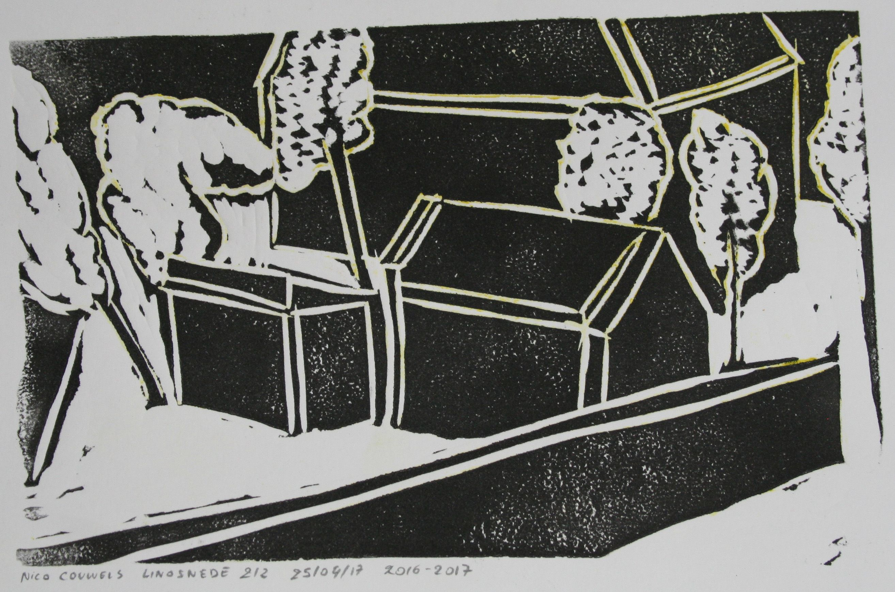
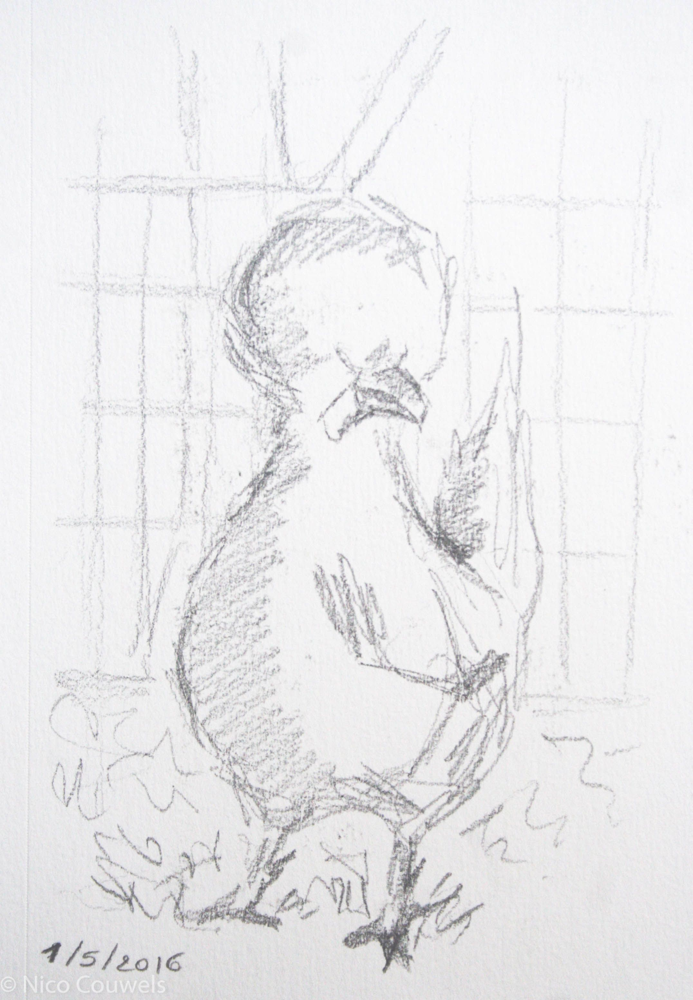
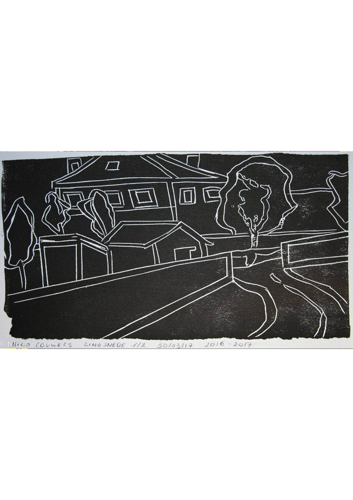
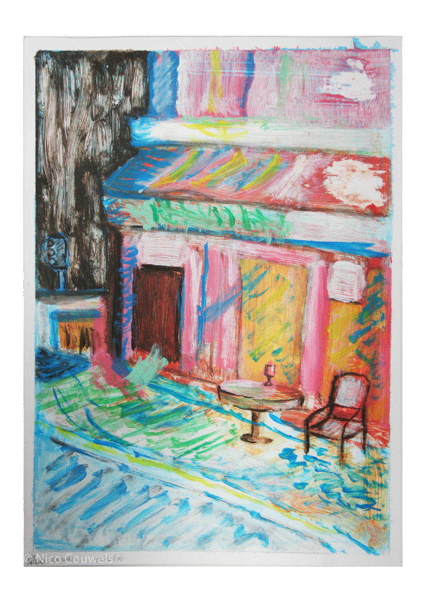
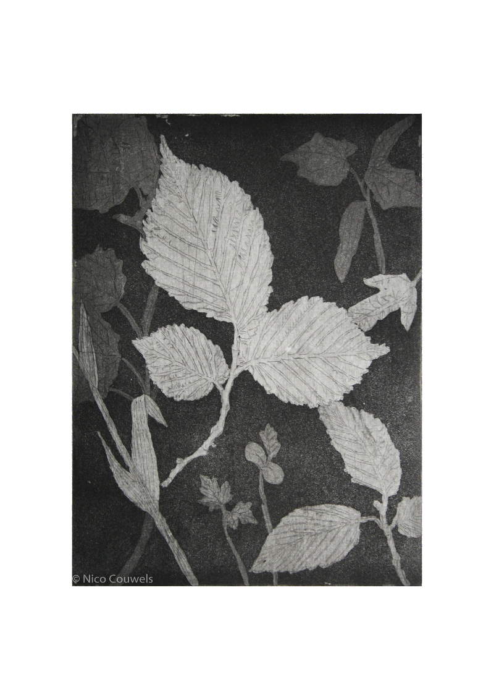
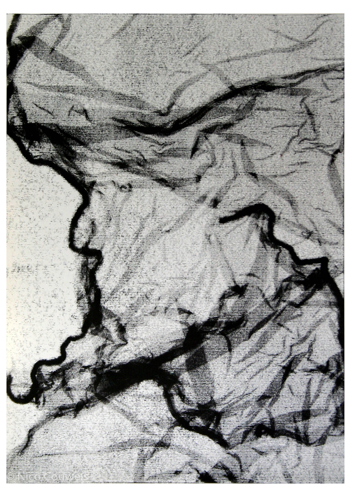
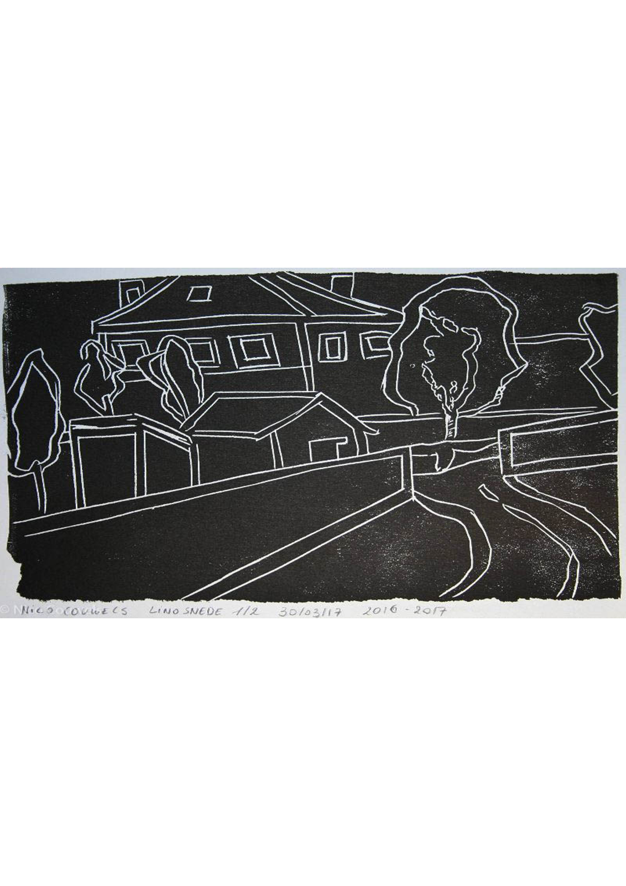
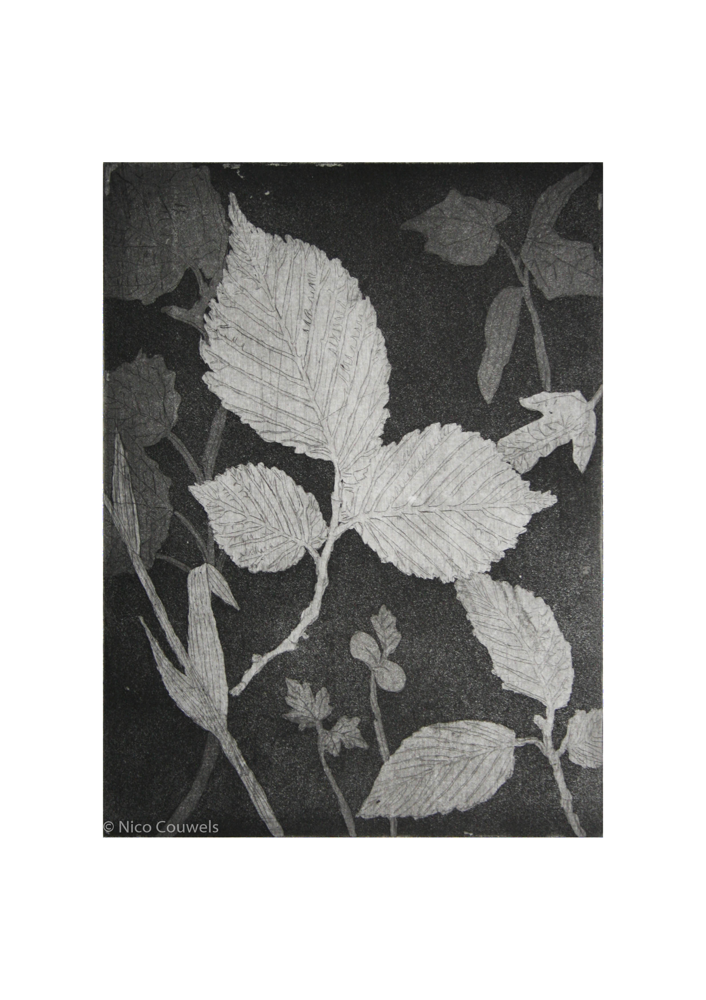

Nico Couwels
Home
Over mij
Werken
free site maker

Naar Kichner's villa in Dresden
Linosnede
8,7 cm x 14,5 cm

Bibip
Potloodtekening
17 cm x 11 cm

Naar Kirchner's villa in Dresden (2)
Linosnede
16,4 cm x 25,7 cm

Café in Parijs
Acrylverf op karton
36 cm x 25,5 cm

Planten compositie
Aquatint
19,9 cm x 14,8 cm

Portret van Vodden
Monotype
35 cm x 25,4 cm


Previous
Next
Close